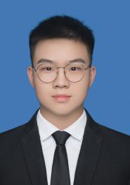

Jiahao Xie (谢佳豪)
|  | Ph.D. student, |
About me
I am currently an incoming Ph.D. student at Central South University, where I am supervised by Prof. Hui Liu.
I obtained my B.Sc. degree (ranked top 1 out of 41 students) in the School of Traffic and Transportation Engineering in June 2022 from Central South University . In the same year, I was selected into the Top Innovative Talents Training Program of Central South University
Research Interests: Neural Networks, Data Mining, Deep Learning, Smart Transportation, etc.
Educations
|
|
Ph.D. student, Central South University (CSU), Changsha, Hunan [2022.9 ~ ]
|
|
|
B. Sc, Central South University , changsha, Hunan [2015.9 ~ 2019.7]
|
Publications
Blog
Zhihu
Personal homepage
CSDN
Personal homepage
Invention Patents
A Topological Optimization Method and System for Multi component Structure of Mortise tenon Interlocking Connection
Bing Yi, Yongfeng Song, Haowen Zheng, Wencheng Zheng, Mingjie Guo, *Jiahao Xie*, Honglei Xu, Renkai Sun, Ying Zhang, Yanjun Zhong
China Invention Patent, Publication Patent Number: CN112883619A
Utility Model Patents
An Automatic Calibration Device and System for Fuel Cell Engines
*Jiahao Xie*, Neng Wang
China Invention Patent, Publication Patent Number: CN214426975U
Other Project
TAT Smart Time Management Master
Project Leader;
The University Student Innovation and Entrepreneurship Project of Hunan Province, No. S202010533183X
Vertical Sharing of CSU Learning Resources
Project Key Member;
The University Student Innovation and Entrepreneurship Project of Hunan Province, No. S202010533183X